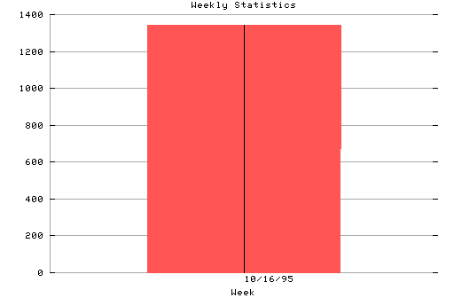

HTTP Server Weekly Statistics Covers: 10/16/95 to 10/19/95 (4 days). All dates are in local time. Week of 10/16/95: 1344 : ########################### Statistics generated at Fri Oct 20 01:00:26 MET 1995, (C) Oslonett AS, 1995.
Statistics generated at Fri Oct 20 01:00:26 MET 1995, (C) Oslonett AS, 1995.